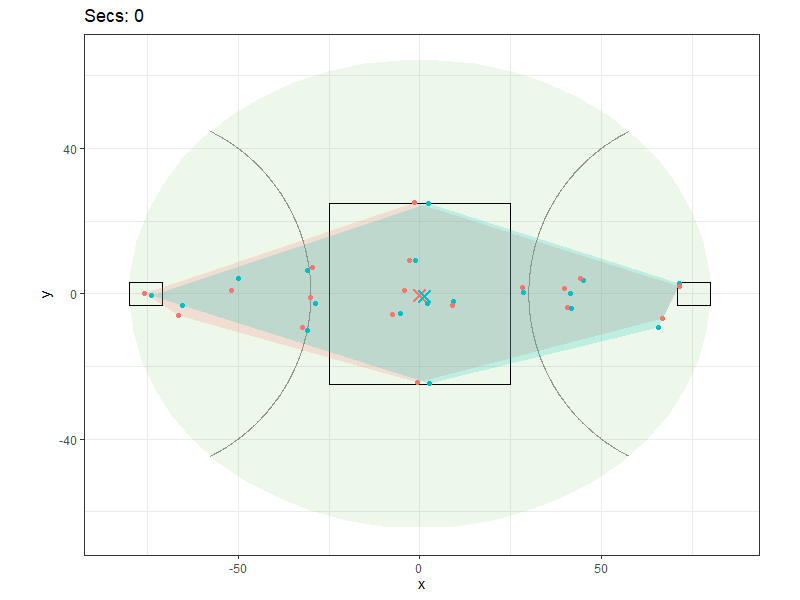
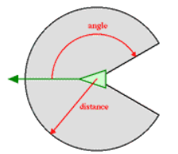
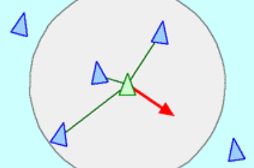
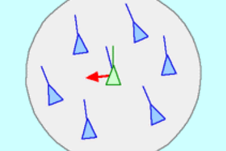
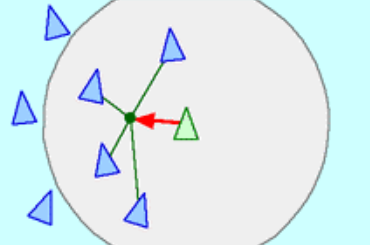
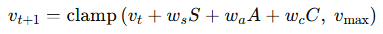

AFL Boids
AFL Tracking Data
While using AFL tracking data to create a GIF similar to the one below for a uni assignment I was struck by how much the movement reminded me of a biological organism. At the same time I stumbled on this video coding a flocking simulation using “boids” and wondered if the same process could be used to create similar movement to AFL. But first, what are boids?
Boids
Boids (bird-oids) is a model introduced by Craig Reynolds in 1986 to simulate coordinated group movement, like bird flocks or schools of fish. Each agent boid follows simple local rules based on nearby neighbours. At each timestep, its velocity is updated by combining the effects of these rules, producing emergent, lifelike group behaviour from very simple interactions.
The proximity of its neighbours is generally defined using the below diagram which, interestingly, often seen in sports analytics papers when describing pressure.

The three steering behaviours are below with the red arrow showing the update to the current velocity based on that rule:
Separation (S) - Steer to avoid crowding local flockmates

Alignment (A) - Steer towards the average heading of local flockmates

Cohesion (C) - steer to move toward the average position of local flockmates

The resultant velocity is clamped within a predetermined limit giving the below equation:

The weighting of the rules causes major changes to how the boids interact. Below is a p5.js sketch implementing the basic structure. The three sliding rulers change the rule weights in the order they were shown above.
Original P5.js Sketch
1.0
1.0
1.5
AFL Boids
Currently implemented:
AFL ground with realistic dimensions
Add boundary detection and avoidance - 4th rule that ramps up (quadratic) to be higher than any of the other rules once on the boundary line - starts 85% of the way to the boundary
Added the concept of teams, positions and starting 6-6-6 rules
Changed the proximity radius to 30m
Stationary boids now shown as dots
Team specific rule weightings
Convex hull and centroid for comparison with the orginal gif
Added the ball as a goal as the mouse
Ideas to add:
Ball
I’ve only just found the torp package by Pete Owen with play-by-play data so I can add the actual ball location in this game
I’ve had a small play and syncing the tracking and play-by-play data will be a small project on its own
This will allow me to add different behaviours based on the game state
Position roles
Depends how hard they go for the ball?
How much they track their man?
The boids currently get locked into their full speed with constant feedback from their flockmates which makes for a compelling visualisation but not how AFL is played.
Some dampening of the velocity over time?
More constraints on position?
Teammate weights
1.0
1.0
1.5
Opponent weights
0.0
0.0
1.5
1.0